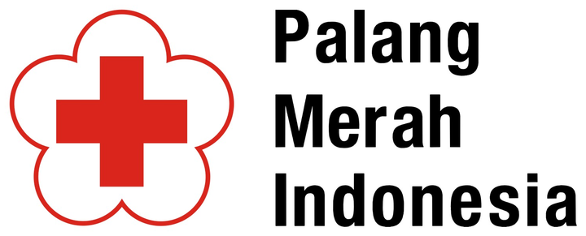

UKS PMR Wira SMKN 1 Gombong
Platform rekam medis digital Unit Kesehatan Sekolah. Kunjungan pasien sakit dan hasil tekanan darah tercatat dengan rapi, mudah ditelusuri, dan hanya dapat diakses sesuai peran pengguna.
Anggota PMR baru?

Contoh catatan
- Nama pasien
- Gamma Stemsago
- NIS
- 99999
- Kelas
- XII TKJ A
- Sakit / keluhan
- Pusing sejak pagi
Pencatatan UKS yang lebih tertib dan efisien
Seluruh data pasien sakit dan tekanan darah tersimpan terpusat, mudah dicari, dan dikelola sesuai kewenangan masing-masing pengguna.
-
Pencatatan kunjungan pasien
Nama, NIS, kelas, tanggal sakit, dan keluhan pasien tercatat dalam satu formulir yang ringkas.
-
Pencarian dan penyaringan data
Riwayat pasien sakit dapat ditemukan dengan cepat berdasarkan nama, NIS, kelas, atau keluhan.
-
Pemantauan tekanan darah
Hasil pengukuran dikategorikan otomatis, dari hipotensi hingga krisis hipertensi, lengkap dengan catatan dan anjuran.
-
Hak akses sesuai peran
Administrator, Petugas UKS, dan Siswa memiliki perannya masing-masing di dalam sistem.
-
Obat keluar dan peminjaman barang
Pemberian obat dan peminjaman perlengkapan UKS tercatat lengkap dengan tanggal, nama, kelas, dan keterangan.
-
Rekap data bulanan ke dokumen
Data bulanan diunduh sebagai dokumen Excel: daftar data, ringkasan angka, dan grafik berwarna untuk membantu analisis.
Kegiatan PMR Wira
Dokumentasi kegiatan anggota PMR Wira sepanjang tahun ajaran. Klik gambar atau judul untuk melihat foto asli dan deskripsi lengkapnya.
Prestasi dan lomba
Capaian anggota PMR Wira dalam berbagai perlombaan. Klik gambar atau judul untuk melihat foto asli dan detailnya.
Login untuk mulai menggunakan sistem
Petugas UKS mencatat data pasien sakit dan tekanan darah, sedangkan Siswa dapat melihat hasil tekanan darahnya sendiri.
Siap melanjutkan pekerjaan Anda?
Buka data pasien sakit, input hasil pengukuran tekanan darah, atau catat obat keluar dan peminjaman barang.
Pantau tekanan darah Anda
Lihat hasil pengukuran yang telah dicatat Petugas UKS beserta catatan dan anjurannya.